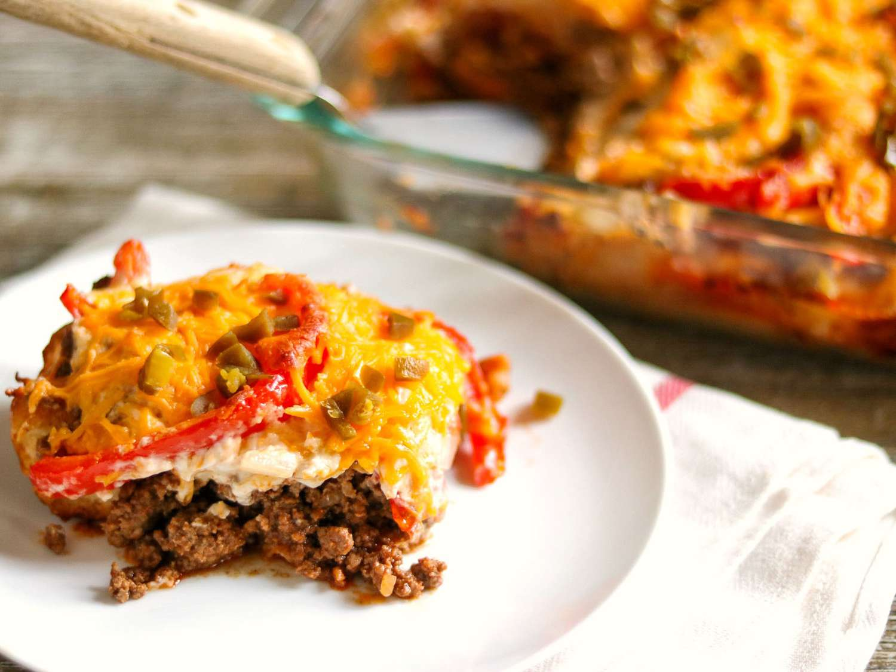

John Wayne Casserole

Simple desctription
The John Wayne casserole is a hearty and satisfying dish that's sure to please everyone at your table.
Ingredient you need
- Biscuits: This convenient dinner starts with a can of refrigerated biscuits.
- Beef:You'll need a pound of ground beef for this meaty casserole.
- Vegetables
- Sour cream and mayonnaise: A mixture of sour cream and mayonnaise is creamy, tangy, and adds tons of welcome richess.
Steps
- Make the crust:Press the biscuit dough in the bottom and
up the sides of a prepared baking dish. Bake in the preheated oven until lightly browned.
- Cook the veggies:In the same pan, cook the sliced onions and peppers until tender.
- Make the creamy layer: Combine the sour cream, mayo, 1/2 of the Cheddar, and 1/2 of the cooked veggies in a bowl.
- Layer and bake the casserole: Layer the meat, tomatoes, onion-pepper mixture, jalapeños, and sour cream mixture on top of the biscuit dough. Sprinkle it with cheese. Bake in the preheated oven until the cheese is browned and bubbly.
back to homepage